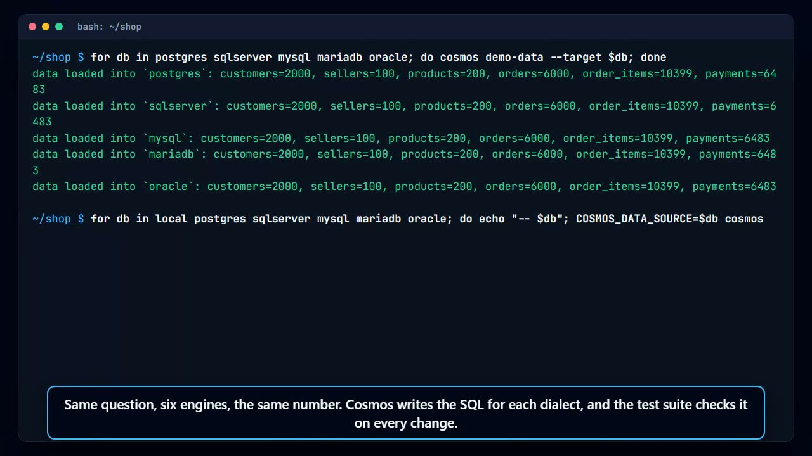

Multi-database
One model, the same number on eight databases, checked by the test suite on every change.
Cosmos Semantic is an open-source semantic layer with an ontology at its core. Define metrics, business rules and concepts once. Agents ask for a governed metric over MCP instead of guessing SQL, and every answer carries its evidence.
No install needed for the demo: read-only console, synthetic data.
"Revenue" has three definitions. "Active customer" means 60 days to one team and 90 to another.
An agent that writes SQL straight over raw tables returns numbers that look right and that nobody can explain. Cosmos Semantic puts the business definitions between the agent and the data.
How it works
Metrics, dimensions and business rules in YAML with the dbt Semantic Layer vocabulary, a bilingual SKOS glossary, owners and tests. Or import them from dbt, Power BI, Cube and Apache Ossie.
A native MCP server for AI agents and a REST API for apps. Agents find the concept, ask for the metric and get deterministic SQL. Personal data never reaches them.
Every answer carries the expanded formula, the rules applied, the row filters, the reference date and hashes. cosmos replay tells whether a number changed, and why.
$ cosmos query revenue average_order_value --by orders.status --evidence orders__status revenue average_order_value -------------- ------------- ------------------- pending 1,578,795.78 2,626.95 canceled 1,518,830.03 2,548.37 completed 12,562,542.20 2,615.56 evidence q_2eae279c2b6b494da485 model edb8d14a70cd1e35 engine 0.1.0 as of 2026-11-04 (America/New_York) source local (duckdb) metric revenue = SUM(orders.amount) lineage orders sql eb5ca2c843244937 result 451c5e52d6f85089 (3 rows)
Features
One model, the same number on eight databases, checked by the test suite on every change.
A bilingual business glossary (SKOS), versioned business rules with owners and tests, and a knowledge graph of teams, systems and processes.
A native MCP server, listed in the official MCP registry. Agents ask for governed metrics, and requests for personal data are refused and logged.
Evidence on every answer and replay of any audited query: tell whether a number changed and why.
Compare a governed metric with the legacy SQL a team already uses, and get the likely cause of each divergence.
Apache 2.0 and its own engine. Import from dbt, Power BI, Cube and Apache Ossie; export to dbt, Cube, Ossie and SKOS.
Multi-database
Dialects differ in integer division, rounding, booleans, week numbering and "today". The engine handles them, and an equivalence suite runs the same reference queries on every database in CI.
See it
pip install to the same number on six databases.A 90-second narrated walkthrough with captions. Every command output in it is real.
Read-only, synthetic data. Metric health, audited answers, business processes as graphs, the catalog in business words, and the query explorer.
Quickstart
On a local DuckDB file, no server and no account. Add the extras for the databases you use: postgres, sqlserver, mysql, oracle, databricks, snowflake, and server for REST and MCP.
$ pip install "cosmos-semantic[duckdb,testdata]" $ cosmos init demo && cd demo $ cosmos demo-data $ cosmos query revenue average_order_value --by orders.status --evidence $ cosmos explain rule:active_customer
News

An open-source semantic layer that makes AI agents get the number right, and prove it.
Read on LinkedIn →
Nine slides: the problem, define, serve and prove, the eight databases, reconciliation and the ontology.
Open the slides (PDF) →
Five real databases in Docker plus DuckDB, the same question and the same number.
Watch it here →More: the launch article on dev.to · em português · changelog
Star the repository, try a good first issue, or bring the number your agent got wrong.